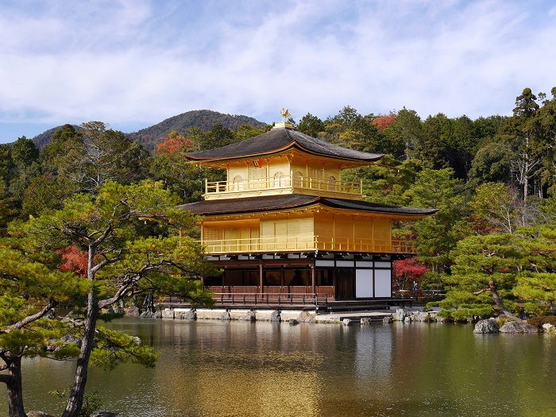

Locais Turisticos

Os pontos turisticos de Kyoto são muito conhesidos por seus Templos historicos e suas paisagens
deslunbrantes.
1. Templo Kinkaku-ji (Pavilhão Dourado)
Um dos templos mais icônicos de Kyoto, com suas paredes externas cobertas de folhas de ouro.
O templo reflete lindamente no lago circundante, criando uma cena memorável.

2. Templo Fushimi Inari Taisha
Famoso por seus milhares de torii (portões vermelhos) que formam trilhas que levam até o topo da montanha Inari.
O templo é dedicado à deusa do arroz, Inari, e suas trilhas proporcionam uma
caminhada inesquecível.